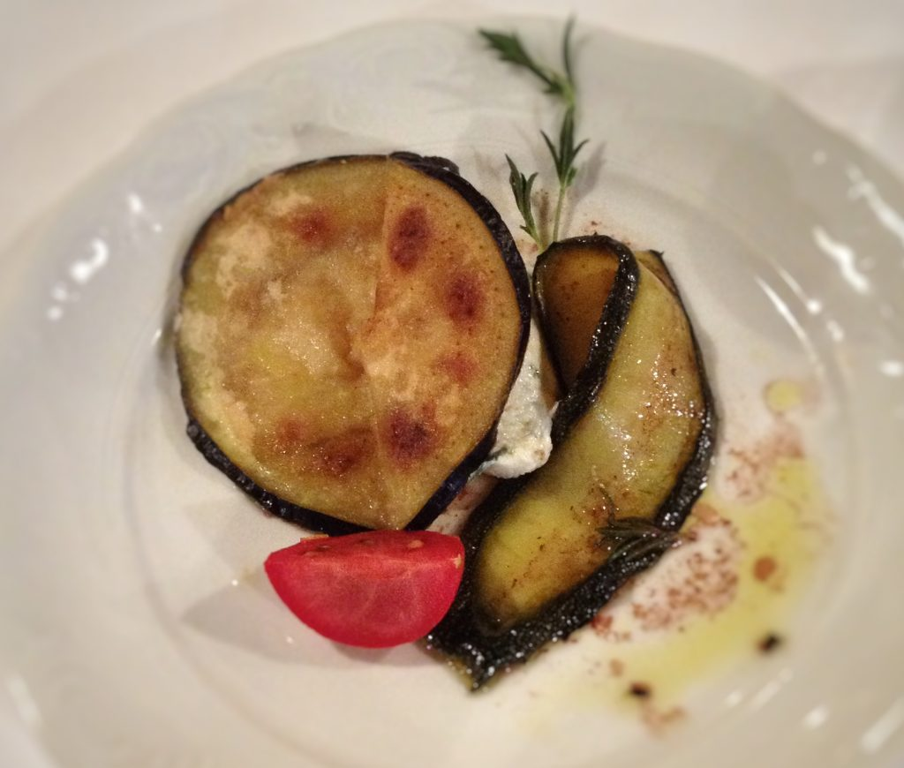

Photo by Francesca Tosolini
If you leave a tip, leave it in cash. If for any reason you leave without leaving a tip, nobody will ever ask you if there was something wrong with your lunch or dinner. In Italy, tips are always well accepted, of course, but they are not a customary rule as in the States.
{This is an excerpt from chapter 3 “Italian cuisine and food establishments” of the eBook “Italy from the Inside. A native Italian reveals the secrets of traveling in Italy”}